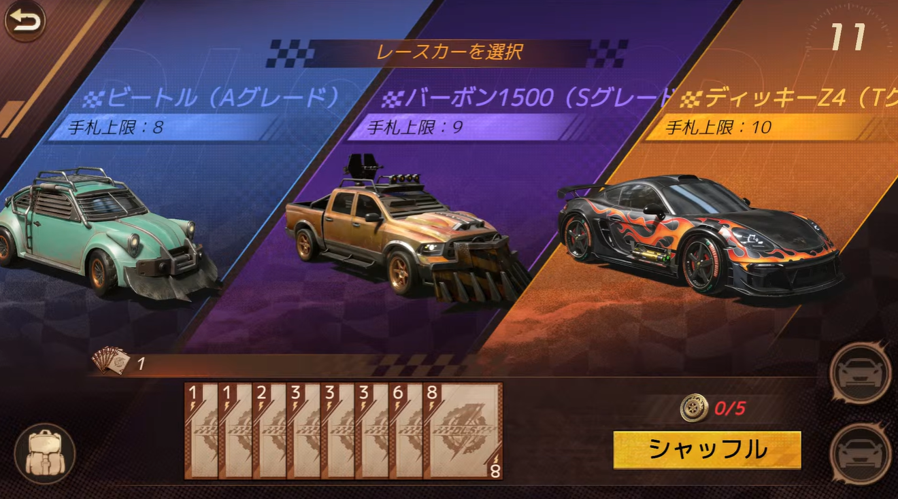

世界一需要のない荒野のレーサー攻略
なぜ今さら荒野のレーサーなのか・・・それは私の欠片が全てエレンに吸い取られたためです。
その1 基礎スコア
まずはじめに、ルールのどこにも記載がありませんが、カードごとに 基礎スコア が存在するようです。
| カード | 基礎スコア |
|---|---|
| 1 | 150 |
| 2 | 160 |
| 3 | 170 |
| 4 | 180 |
| 5 | 190 |
| 6 | 200 |
| 7 | 205 |
| 8 | 210 |
| 9 | 215 |
| 10 | 220 |

得点計算式（仮説）
（カード基礎スコア合計）×（速度ボーナス倍率）＝スコア
と思われます。
例① 66のワンペア
（200＋200）×（100％＋50％）＝600
600ポイント
例② 34567の5連
（170＋180＋190＋200＋205）×（100％＋180％）＝2645
2645ポイント
検証したところ、役なし1枚出しでも「基礎スコア×1倍」で得点が入ります。
実戦で重要なこと
- 9・10を含む役ほど高得点になりやすい
- 1・2は役作りより捨て札として使う方が効率的
その2 乗り物
こちらもサブ垢同士でマッチングさせて検証しました。
カードを一切出さずにゴールさせると、 ディッキーZ4はビートルより約0.75秒速い ことを確認しました。
つまり、乗り物ごとに隠しステータスが存在します。
本当に重要なのは手札上限
速度以上に重要なのが手札上限です。
補給ポイントで本来3枚補充できるのに手札が溢れてしまうと損失が非常に大きいため、初手補充枚数まで考えて乗り物を選ぶ必要があります。
初手例

この初動なら11を捨てて3枚補充すると手札6枚。 2233・3333待ちになるため、 上限9枚のバーボン がちょうど噛み合います。
立ち回り編
ここまで理屈でしたが、実戦では上振れ狙いをおすすめします。
順位報酬よりランキング報酬（レジェ欠片）を狙うなら攻める方が強いです。
基本方針
- ワンペア・役なし1枚出しで手札調整
- 2連ペア・5連を最低ラインとし、積極的に上振れを狙う
- 4連は基本狙わない
一番難しい判断
トリプルが見えた時、 クワッドを狙うかどうか が最も難しい判断になります。
そこで私は 99G課金のカードグレードアップ が最も費用対効果が高いのではないかと考えました。
サブ垢で検証中。。。